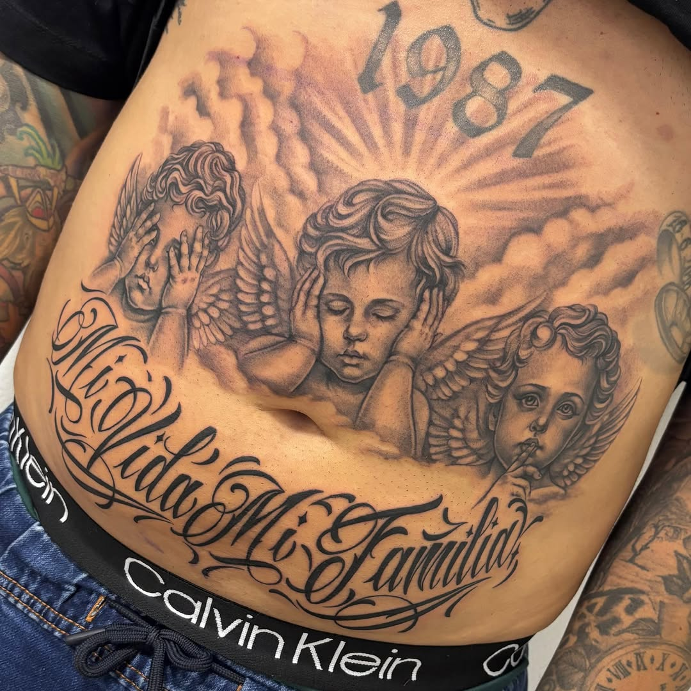
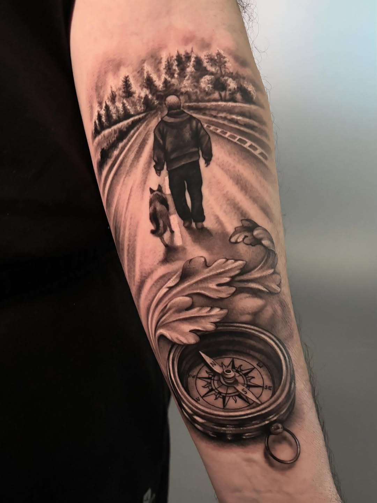
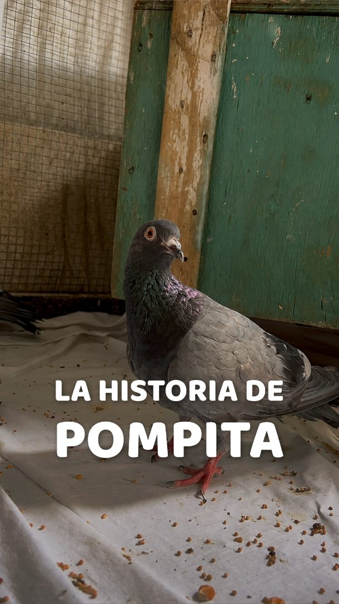
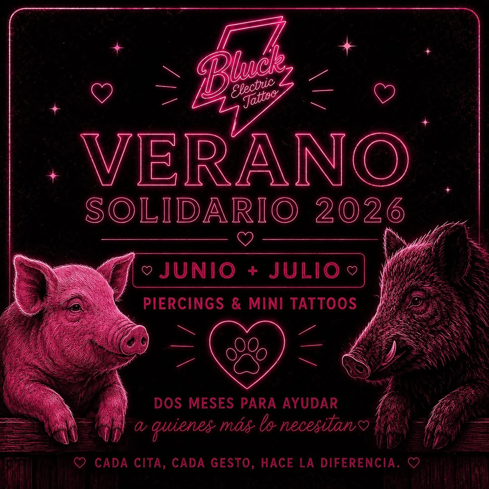
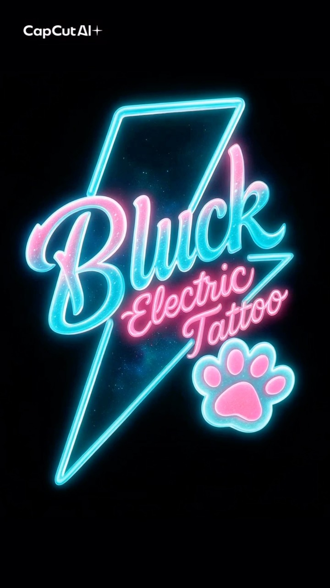
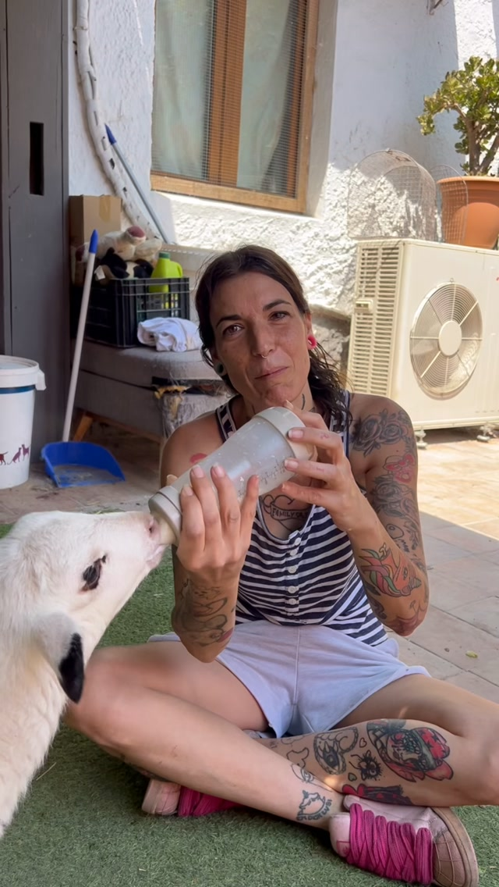
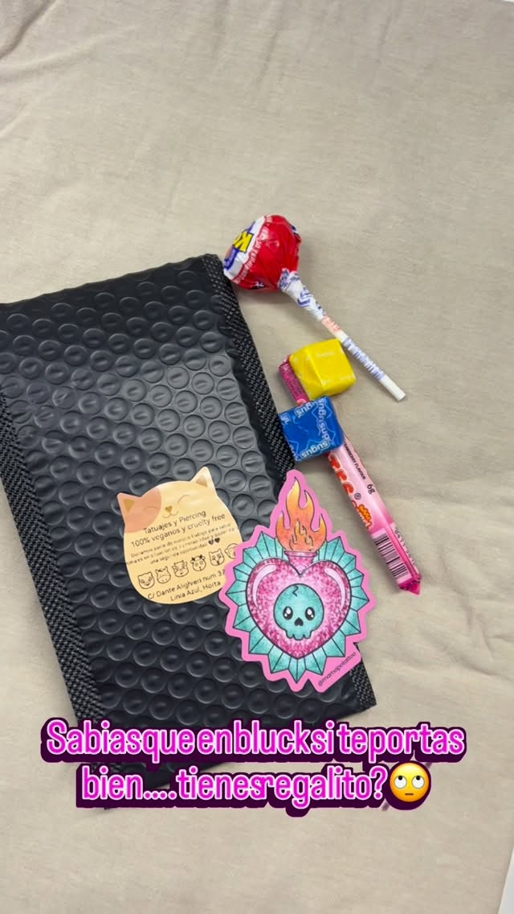
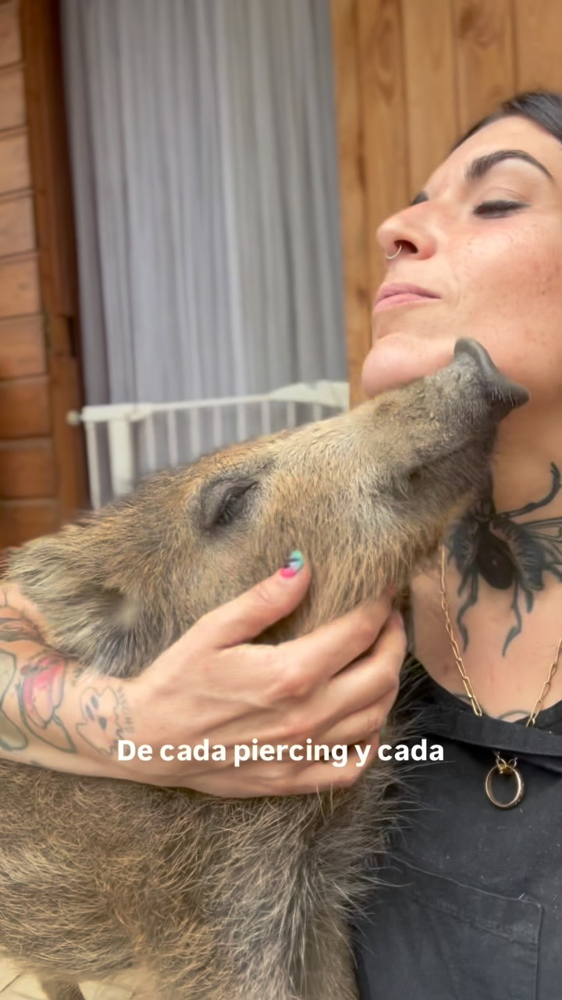

Portfolio Bluck
🌱 Tintas 100% Veganas
Tatuaje de autor, piercing profesional y micropigmentación 100% ética en Barcelona. Trabajamos exclusivamente con tintas vegetales certificadas, bioseguridad en grado quirúrgico y una causa clara: cada tatuaje colabora directamente con santuarios y rescate animal.

En un tatuaje convencional se emplean con frecuencia derivados de grasa animal (glicerina), carbón de huesos quemados (bone black) y químicos agresivos. En Bluck Tattoo eliminamos todo rastro de explotación animal sin comprometer un ápice la intensidad, el contraste y la longevidad del tatuaje.
Tintas libres de gelatina y carbón animal. Papel de calco hectográfico vegetal y geles de transferencia sin ceras animales ni lanolina.
Partículas micronizadas de origen mineral y botánico de alta pureza. No viran a tonalidades verdosas ni azuladas con el paso de los años.
Donamos un porcentaje de nuestros ingresos y organizamos eventos de "Verano Solidario" en beneficio directo de santuarios de animales en Cataluña.
Box privado desinfectado con estándares hospitalarios. Agujas monopack de acero quirúrgico abiertas en tu presencia y material biodegradable.
Selecciona tamaño, estilo y zona para calcular el tiempo estimado de sesión y enviar tu idea directamente a Eli por WhatsApp con todos los datos listos.
Trazos limpios, geometría, piezas de autor y nuestra causa por los animales en Carrer de Dante Alighieri 37.

🐾 Mascota & Respeto
🕊️ Rescate Animal
🐾 Verano Solidario
Estudio & Box
🖤 Esencia Bluck
🌱 Aftercare Botánico
Compromiso ActivoTransparencia absoluta y asesoramiento profesional en cada procedimiento.
Diseño único y exclusivo adaptado a tu morfología. Trazos fineline de alta definición, blackwork, micro-realismo botánico o proyectos de mayor formato.
Perforación corporal con técnica aséptica no traumática. Empleamos titanio grado implante ASTM F-136 con pulido espejo que previene rechazos e infecciones.
Corrección estética y reconstructiva mediante pigmentos de alta estabilidad dérmica. Especial cuidado en armonización facial y regeneración con total respeto por la piel.
5.0 de valoración en Barcelona · Clientes felices y pieles sanas
"Fui buscando un estudio donde supiera que las tintas eran 100% veganas de verdad. Eli es un amor, tiene un pulso finísimo y una delicadeza increíble. Mi tatuaje curó perfecto en tiempo récord y el ambiente del estudio te da una paz total."
"El valor solidario y el amor que le ponen a los animales se respira en cada rincón. Me tatué a mi perra rescatada y no pude haber elegido mejor sitio. El trato, la higiene de 10 y el detalle que te dan al salir... ¡100% recomendable!"
"Me hice un piercing y arreglé un tatuaje antiguo (cover-up) y la experiencia fue inmejorable. Nada que ver con otros estudios fríos o ruidosos. En Bluck te cuidan, te asesoran y los materiales son de primera calidad."
Visítanos en Horta-Guinardó. Atención pausada y personalizada con cita previa en un ambiente tranquilo y cuidado.
Envíanos un mensaje directo. Te responderemos asesorándote sobre tamaños, estilo, viabilidad y presupuesto orientativo.